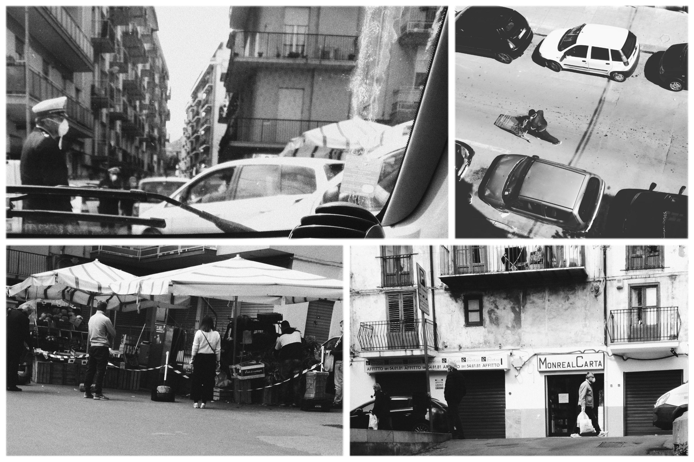

Palermo durante il COVID-19: storie di desolazione, attesa e rinascita
19\03\2020, ovvero "POPULUS"
Vi scrivo dal mio domicilio situato a Pioppo, o per i più fighi “POPULUS”.
Vi narro a proposito del mio pellegrinaggio, ossia di un cammino munito di autocertificazione oltre che di pesanti borse per poter rientrare al suddetto domicilio.
In quel periodo (nove giorni esatti fa) mi trovavo in una casa a Palermo, ove trascorro maggior parte del mio tempo, ma a seguito dello stato di pandemia annunciato dal nostro Presidente del Consiglio dei ministri Conte, di certo non potevo più rimanere fra quelle quattro mura, dato che non vi erano abbastanza cambi per rimanere in un luogo che non è propriamente definibile come “mio”.
Ma continuiamo con questo racconto, che lo potremmo definire quasi “un’avventura”, dato che come ogni avventura degna di rispetto, vi debba essere all’interno di essa anche un ostacolo, il quale lo potremmo chiamare: ammenda di euro seicento. Ebbene sì, in questo “episodio” ho visto parate di uomini seguiti da quasi tutta la loro “settima generazione” e dai carrelli per la spesa. Come se andare al supermercato oggi volesse dire andare in guerra.
Ma fra queste, una soltanto mi è rimasta impressa ed essa comprende tre soggetti oltre che ad una paradossale situazione: tre alberi, tre cassonetti e un uomo con una mascherina. Premetto che avrei voluto tanto immortalare tale scena con la mia Ilford b/n usa e getta, ma lo scatto è rimasto privo del suo protagonista.
Mi trovavo alla fermata dell’autobus a piazza indipendenza, e vi era di fronte a me quest’uomo il quale lo potremmo omologare in quella categoria che secondo la terminologia psicologica viene detta “sillogomania” o “disposofobia”.
Vi riporto la definizione: il disturbo di accumulo è un disturbo caratterizzato da un bisogno compulsivo di acquisire una notevole quantità di beni, anche se gli elementi sono inutili, pericolosi o insalubri. L’accaparramento compulsivo provoca impedimenti e danni significativi ad attività essenziali della vita domestica: mobilità, alimentazione, pulizia e sonno (fonte Wikipedia).
Costui preoccupato dal covid19, aveva indosso una deliziosa mascherina bianca e stava così sereno mentre frugava nei meandri dei sacchetti pieni di avanzi, pieni di tossine e chissà cos’altro. Evidentemente per lui era più pericoloso il covid19, che quel suo stesso atto.
Con aria un po’ cinica o intrisa d’ironia, mi viene da pensare che costui sia immune a qualsiasi virus, forse anche alla peste bubbonica.
Ahinoi, ci troviamo in una situazione in cui o si è eccessivamente menefreghisti o si è totalmente sotto effetto della psicosi e vorrei non dilungarmi in questo argomento, dato che se no il mio racconto diventa un saggio.
In conclusione: non vi è limite al peggio.
Manuela, 21, Pioppo, Italia
 PH: Manuela Anselmo
L'utopia-concretezza nelle illustrazioni di He2
Nicolò Roberto Cannatella, in arte He2. Nasce il 30 Novembre 1989 a Palermo. Attualmente studia alla Scuola del Fumetto, ma opera già da anni ed ha esposto alcuni dei suoi dipinti.
Il suo stile è pieno di piccoli dettagli e accurati effetti prospettici, quasi illusionistici che dirigono il nostro sguardo da spettatore all'interno delle sue illustrazioni. Scene dominate da colori vibranti, che vanno dai toni più delicati a quelli più duri, il che ci permette di calarci nelle profondità di un mondo dominato dalle fragilità e dai piaceri dell'uomo in una dimensione totalmente utopica, ma reale nelle intenzioni umane.
 Illustrazioni di He2
Illustrazioni di He2